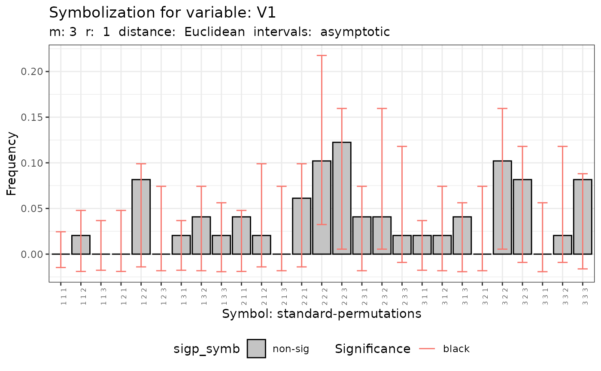
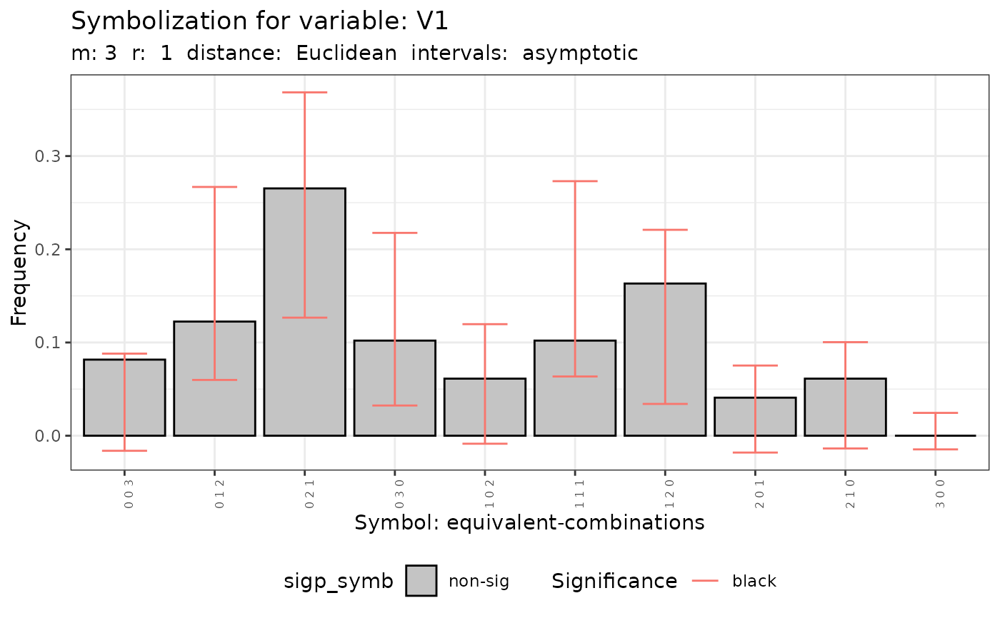

A function to plot the difference in frequencies of symbols of each map.
The plot() function to obtain the plot.
The argument ci select the confidence level.
References
Ruiz M, López FA and A Páez (2011). Comparison of Thematic Maps Using Symbolic Entropy. International Journal of Geographical Information Science, 26, 413-439.
Ruiz, M., López, F., and Páez, A. (2021). A test for global and local homogeneity of categorical data based on spatial runs. working paper.
Author
| Fernando López | fernando.lopez@upct.es |
| Román Mínguez | roman.minguez@uclm.es |
| Antonio Páez | paezha@gmail.com |
| Manuel Ruiz | manuel.ruiz@upct.es |
Examples
# Example 1:
N <- 100
cx <- runif(N)
cy <- runif(N)
coor <- cbind(cx,cy)
p <- c(1/6,3/6,2/6)
rho = 0.5
listw <- spdep::nb2listw(spdep::knn2nb(spdep::knearneigh(cbind(cx,cy), k = 4)))
fx <- dgp.spq(list = listw, p = p, rho = rho)
q.test <- Q.test(fx = fx, coor = coor, m = 3, r = 1)
plot(q.test)
#> [[1]]

#>
#> [[2]]

#>